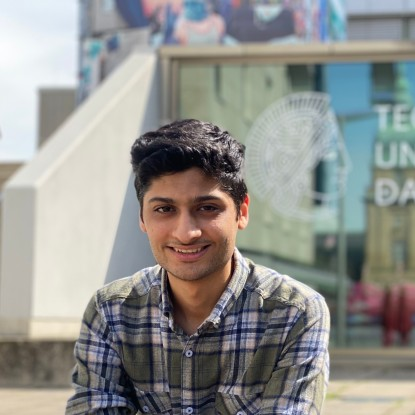

PhD Student & Research Assistant
Technical University of Darmstadt (TU Darmstadt)
Supervisor: Prof. Vahid Jamali
Address: Rundeturmstraße 10, 64283 Darmstadt, Germany
Email: mohamadreza.delbari@tu-darmstadt.de
I am a PhD Student and Research Assistant at the Technical University of Darmstadt (TU Darmstadt), where I joined the Resilient Communication Systems Lab under the supervision of Prof. Vahid Jamali. I began my doctoral studies here in December 2022.
Prior to joining TU Darmstadt, I earned my B.Sc. degree in Electrical Engineering from Ferdowsi University (Mashhad, Iran) in 2019, and my M.Sc. degree in Telecommunications from Sharif University of Technology (SUT) (Tehran, Iran) in 2022.
My research interests lie in the span of Reconfigurable Intelligent Surfaces (RIS), in particular on liquid crystal-based RISs (LC-RIS), and MIMO near-field channel modeling.
My studies are partly supported by the Deutsche Forschungsgemeinschaft (DFG) within the Collaborative Research Center MAKI, the LOEWE initiative within the emergenCITY Centre, and the German Federal Ministry for Research, Technology and Space (BMFTR) joint project Open6GHub plus. I develop the majority of my algorithms and simulations using MATLAB and Python.
Source code for selected papers is available below:
I have had the pleasure of supervising the following students at TU Darmstadt: